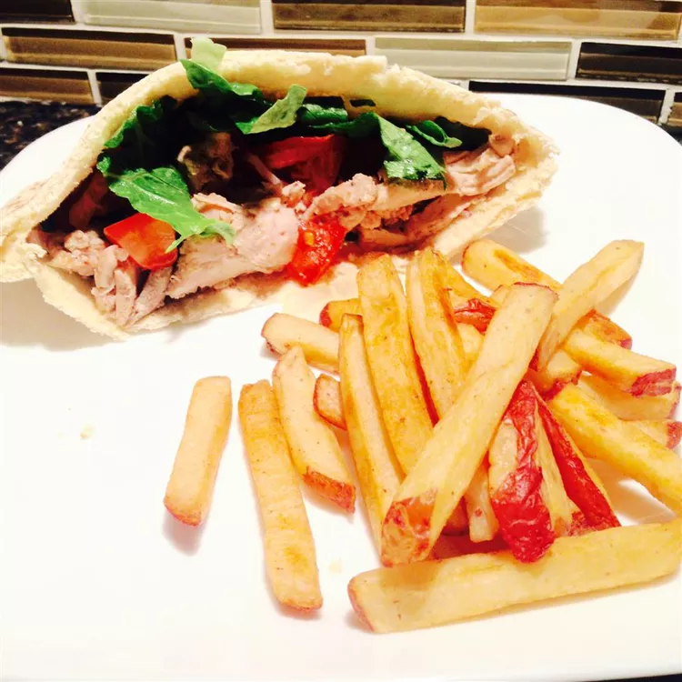

Chicken Shawarma

Description
Awesome Lebanese sandwich served in most Lebanese restaurants. Can be served with Tahini sauce or Toum.
Shawarma is a popular dish originating from the Middle East.
It’s a popular street food that is traditionally made in the form of spiced meats,
that are stacked on a vertical rotisserie with thin slices shaved off as it rotates.
But don’t worry! We can cook our horizontally in a good old
pan or on the BBQ!
Ingredients
- ½ cup malt vinegar
- ¼ cup plain yogurt
- 1 tablespoon vegetable oil
- salt and pepper to taste
- 1 teaspoon mixed spice
- And a whole lotta other stuff
Directions
- In a glass baking dish, mix together the malt vinegar, 1/4 cup yogurt, vegetable oil, mixed spice, cardamom, salt and pepper.
- Preheat the oven to 350 degrees F (175 degrees C). In a small bowl, mix together the tahini, 1/4 cup yogurt, garlic, lemon juice, olive oil, and parsley.
- Cover the chicken and bake in the marinade for 30 minutes, turning once. Uncover, and cook for an additional 5 to 10 minutes, or until chicken is browned
- Place sliced chicken, tomato, onion, and lettuce onto pita breads. Roll up, and top with the tahini sauce.
- Yeah I know I left a lot of stuff out, I want to showcase my HTML skills and these recipes getting too long man.